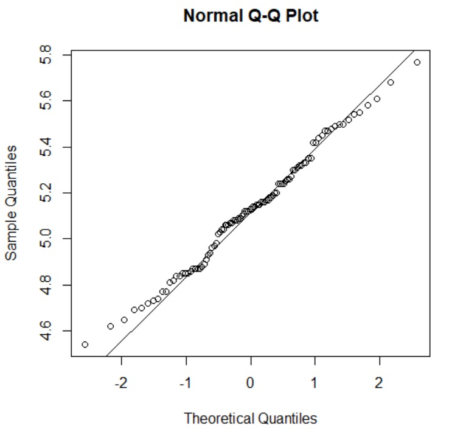

The submission deadline for this assignment is 12pm Monday 6th November. You will need to submit via Gradescope, via the Ultra page. I strongly recommend submitting at least a few hours ahead of the deadline, in case of technical issues.
Questions 2 and 3 are worth approximately twice as many marks as Question 1.
Question 1
A series of multiple choice questions.
The process of making decisions and predictions based on the data is part of which aspect of statistics?
Exploratory
Descriptive
Sampling
Inference
Which of the following is not a measure of central tendency?
Mean
Median
Mode
Upper quartile
To estimate the proportion of defective items in a production line, a quality control analyst inspects the first 70 items produced in an hour. What type of sample does this approach produce?
Random
Stratified
Non-random
Cluster
An office worker wants to test the reliability of some new Christmas lights that have arrived in the office. The office received five strings of lights, with each string containing 30 bulbs each. The officer worker does not have the time to test every bulb in each box. Instead, they choose one string of lights at random and test eight bulbs chosen randomly within that string. What is the population of interest?
The light string randomly chosen
The 150 bulbs
The eight bulbs randomly chosen
The five light strings
A scientist designs a trial to catch 300 spider crabs, measure their shell widths, and release them back into the sea. All crabs will be caught before measuring begins, and all measuring will be complete before data analysis begins. The scientist wishes to create a 95% confidence interval for the average shell width of a spider crab.
What is the point in this process when the 95% confidence interval stops having a probability of 0.95 attached to it?
After the first spider crab is caught.
After the spider crabs have all been caught.
After the spider crabs have all been measured.
After the confidence interval has been calculated.
Question 2
In this question, we will investigate how much sugar I add to coffee when I am asked to put “one teaspoon” of sugar in. Note: “one teaspoon” is a measurement equal to 5 millilitres (ml).
Import the data file Sugar.csv, available in the Data folder, inside the Assignments folder on the module Ultra page, into R.
This data file contains 100 simulated values of the amount of sugar, in ml, that I add to a coffee when I am asked to add “one teaspoon”.
Draw a Q-Q plot of the data, and comment on whether the data appears normally distributed.
The Q-Q plot is:

The points on the Q-Q plot do not deviate far from a straight line, suggesting we have data which is approximately normally distributed.
Apply the Shapiro-Wilks test to the data, and give the resulting p-value. Comment on this p-value with respect to your answer to part 1 of this question.
The p-value for the test is 0.6553. This is weak evidence against the null hypothesis that the data is normally distributed. This is in agreement with the conclusion from the Q-Q plot, but provides a mathematical measurement, rather than an “eyeball” conclusion.
Perform a two-tailed hypothesis test, at the 5% significance level, to compare the amount of sugar I am adding, against the 5ml of sugar I am supposed to be adding.
In doing so, include the following steps in your submission:
The null and alternative hypothesis;
We have
The value of the test statistic;
We have
and hence
A value here will be sufficient, since I have not requested working be shown, and students may choose to attempt question in R
The critical value (specifying whether you have taken your critical value from a t distribution, or the standard normal distribution);
Significance level is given as 5%, and this is a two-tailed test, so student should find either or .
The conclusion you draw from the result of the test.
Whether the student performs a z-test or a t-test, the test statistic is larger than the critical value. Hence, the null hypothesis can be rejected, and we accept that the mean amount of sugar I put in coffee when asked to put in “a teaspoon” is not 5ml.
Question 3
The datasets beaver1 and beaver2 are both available in R. beaver1 shows data for beavers recorded in mid December, while beaver2 shows data for beavers recorded in early November. Each data set contains four columns, but you will only need to use values from the temp column from each data set. This column represents the internal body temperature of beavers, measured using an internal sensor.
Perform a hypothesis test, at the 5% significance level, to determine whether beavers have, on average, a lower internal body temperature in December than they do in November. In doing so, provide the following steps in your submission:
The null and alternative hypothesis, justifying your choice of the latter;
We have
(Students may use different notation)
The choice of a one-tailed hypothesis test here is justified by the question asking for us to determine whether average beaver internal body temperatures are lower in December than in November, rather than whether the averages are simply different.
The form of test you will apply, justifying your choice;
We cannot pair off values, so we either use a pooled or an unpooled t-test, depending on Levene’s test.
Running the test gives us a p-value of 3.712e-15, and hence we use an unpooled test.
The value of the test statistic;
We have
and hence
A value here will be sufficient, since I have not requested working be shown, and students may choose to attempt question in R - indeed I expect them to do so.
A bound on the p-value for the test;
This is an unpooled t-test, for which R gives a p value of ¡2.2e-16.
The conclusion you draw from the result of the test.
The null hypothesis can be rejected, because the p value is so much smaller than 0.05). We accept that average internal beaver temperature is lower in December than in November.